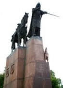

Lietuvos didysis kunigaikštis Gediminas medžiojęs Šventaragio slėnio giriose. Pavargęs po ilgos sėkmingos medžioklės kunigaikštis ten pat ir apsistojo nakvoti. Vos sumerkus akis, aplankė nepaprastas sapnas. Išvydo Gediminas kalno viršūnėje, kur jis tądien taurą nukovė, didžiulį staugiantį geležinį vilką. Ryte kunigaikštis pagonių žynio Lizdeikos paprašė paaiškinti sapną. Jis atskleidė, kad geležinis vilkas simbolizuoja neįveikiamą pilį ir miestą, kurį valdovas šioje vietoje įkursiąs. Tas miestas – sostinė, o vilko staugimas – miesto šlovė.
Anot pasakojimo, Kristoforas norėjęs tarnauti viešpačiui ir visur jo ieškojęs. Šventasis atsiskyrėlis pasakęs, kad Kristoforas galįs tarnauti Kristui nešiodamas keleivius per sraunią patvinusią upę ir tada galbūt Kristus pasirodysiąs. Vieną naktį Kristoforą pažadino mažas berniukas. Kristoforas pasisodino vaiką ant pečių ir pradėjo bristi. Kilo audra, berniukas vis sunkėjo, ir jie vos nenuskendo. Laimingai pasiekęs krantą, Kristoforas paklausė berniuko, kas jis toks. Berniukas pasakė esąs Kristus, nešąs savo rankose viso pasaulio sunkumus. Šis herbas miestui suteiktas 1330 m.